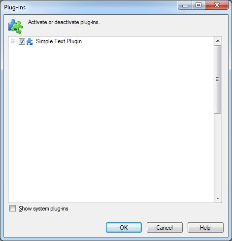

Build the File Type Plug-in
This chapter contains important information on building your file type plug-in and on the plug-in package file, which is created during the building process.
The Plug-in Package
Building the project will generate a *.sdlplugin file, in our example Sdl.Sdk.FileTypeSupport.Samples.SimpleText.sdlplugin, which will be placed inside your build output path. The .sdlplugin file is technically speaking a ZIP archive that contains the required plug-in components such as the plug-in binary (.dll itself), the resources file, the manifest etc. For our example, the *.sdlplugin file will contain the following:
- The plug-in assembly, e.g. Sdl.Sdk.FileTypeSupport.Samples.SimpleText.dll
- The plug-in manifest, e.g. Sdl.Sdk.FileTypeSupport.Samples.SimpleText.plugin.xml. The manifest lists information on any extension classes that the plug-in contains. It is this manifest that will be created during the build process. It declares the assembly and the corresponding extension classes to Trados Studio. By deleting this manifest *.xml file you would actually deactivate the plug-in and 'hide' it from the application.
- The plug-in resources file, e.g. Sdl.Sdk.FileTypeSupport.Samples.SimpleText.plugin.resources. This resources file contains all the localizable strings and images referred to within the plug-in manifest, and is compiled from PluginResources.resx (see also The Resources File).
The Plug-in Package Path
In order for Trados Studio to pick up the plug-in package and to extract it, the following folders need to be available on your hard drive:
For Windows 10\ Windows 7\ Windows 8:
- %AppData%\Trados\Trados Studio\18\Plugins\Packages\ *
and
- %AppData%\Trados\Trados Studio\18\Plugins\Unpacked\ *
Make sure that you place the *.sdlplugin file into the sub-folder Packages and launch Trados Studio. During startup of Trados Studio the content of the package will be automatically extracted to the Unpacked sub-folder, as illustrated below:
The above folder does not have to be the build output path, but it is convenient to build the project in this folder, as this will also create the *.sdlplugin file where it needs to be. After creating the plug-in based on the (empty) template, you could already build the project. However, it will, of course, not offer any functionality.
Upon start-up Trados Studio will load the unpacked plug-in and show the following message, which you can confirm with Yes, so that the plug-in gets loaded. This message appears when loading plug-ins that have not been certified by RWS, which could potentially be unsafe. The message can be avoided by submitting your plug-in to RWS for certification.

Note
If a user clicks No when the plug-in security message is displayed during start-up of Trados Studio, the plug-in will not be shown in the application.
After loading the plug-in in Trados Studio, you can confirm that the plug-in has been added by raising the corresponding dialog box through the menu command Tools -> Plug-ins. The Plug-ins dialog box should list the name of your newly created plug-in:

The Plug-in Manifest
One essential piece of information required in order to build the plug-in package this is the plug-in package manifest, which is defined in the file pluginpackage.manifest.xml. This file is part of the project template. If this manifest is missing, the project package cannot be built.
Below you see what the manifest of our sample plug-in looks like:
<?xml version="1.0" encoding="utf-8"?>
<PluginPackage xmlns="http://www.sdl.com/Plugins/PluginPackage/1.0">
<PlugInName>Sdl.Sdk.FileTypeSupport.Samples.SimpleText</PlugInName>
<Version>1.0</Version>
<Description>Sdl.Sdk.FileTypeSupport.Samples.SimpleText</Description>
<Author></Author>
<RequiredProduct name="SDLTradosStudio" minversion="16.0" />
</PluginPackage>
The manifest contains the following information:
- PlugInName: indicates the friendly name of the plugin. This string be different from the name of the plug-in that is defined in PluginResources.resx. The reason for this is that a plug-in package can - in theory - contain multiple plug-ins, which need to be distinguished.
- Version: the version of the plug-in package. This information is used to detect any package updates upon start-up of Trados Studio, and is therefore important.
- Description: descriptive information of the plug-in package.
- Author: the name of the plug-in developer.
- RequiredProduct: this string indicates which RWS product version is required to run the given plug-in. The information that you indicate here must include the minimum version, and can optionally include a maximum version.
Build and Debug Suggestions
Here are a couple of simple suggestions to help buld and debug your plug-in.
- Change your solution and project so that it runs Trados Studio by default.
- Change your project so that it the output is directed to the Trados Studio plug-in package directory - this will automatically deploy your plug-in. In Windows 7, the -in package directory is stored in %AppData%\Trados\Trados Studio\18\Plugins\Packages\.
- Change your project so that it deletes the previous unpacked version of your plug-in - this will ensure that Studio uses the latest version of your plug-in. This can be done using a post-build event.
rmdir /S /Q "%AppData%\Trados\Trados Studio\18\Plugins\Unpacked\ \Sdl.Sdk.FileTypeSupport.Samples.Bil"
See Also
Note
This content may be out-of-date. To check the latest information on this topic, inspect the libraries using the Visual Studio Object Browser.